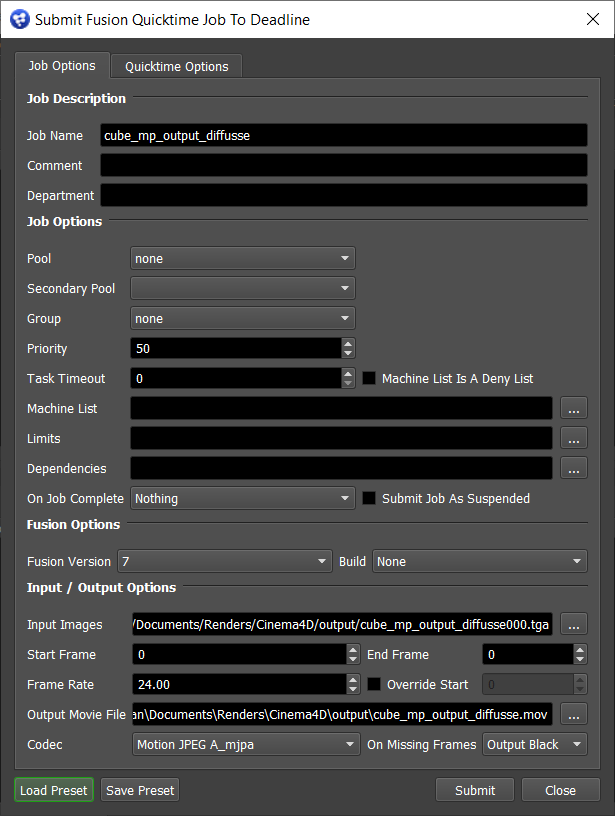
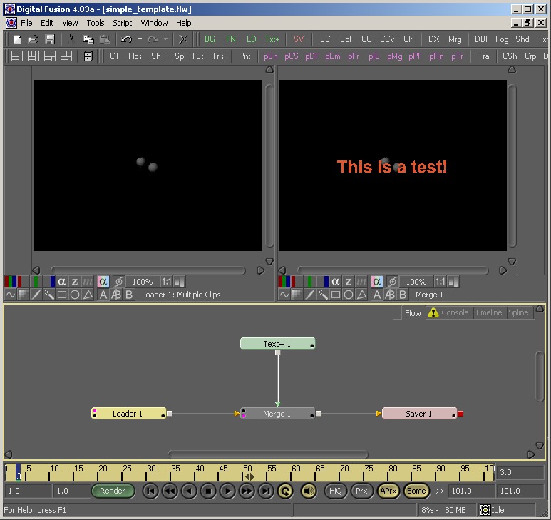

Fusion Quicktime¶
Job Submission¶
You can submit Fusion Quicktime jobs from the Monitor.
Submission Options¶
The general Deadline options are explained in the Job Submission documentation, and the Draft/Integration options are explained in the Draft and Integration documentation.
Fusion Options
Fusion Version: Select the version of Fusion to generate the Quicktime with.
Build: Force 32 or 64 bit rendering.
Load/Save Preset: Allows you to save your Fusion Quicktime options to a preset file, so that you can load them again later.
Input/Output Options
Input Images: The frames you would like to generate the Quicktime from. If a sequence of frames exist in the same folder, Deadline will automatically collect the range of the frames and will set the Frame Range field accordingly.
Frames: The frame range used to generate the Quicktime.
Frame Rate: The frame rate of the Quicktime.
Override Start: Allows the starting frame in the quicktime to be overridden. For example, if you are making a quicktime from images with a range 101-150, you can override the start frame to be 1, and the range in the quicktime will appear as 1-50.
Output Movie File: The name of the Quicktime to be generated.
Codec: The codec format to use for the Quicktime.
On Missing Frames: What the generator will do when a frame is missing or is unable to load. There are 4 options:
Fail: Nothing will be generated until the missing frame becomes available.
Hold Previous: The last valid frame will be included instead of the missing frame.
Output Black: A black frame will be included instead of the missing frame.
Wait: The generator will wait until the missing frame becomes available.
Quicktime Options
BG Plate: Specify an optional background plate. The Quicktime will render using the selected file as the background.
Template: Specify an optional comp template. See the Template documentation below for more information.
Artist Name: if you have a text tool with “artist” in its name in the selected template comp, its text will be set to the name that is specified.
Curve Correction: Select to turn on the color curves tool (available when using templates only).
Quality %: The quality of the Quicktime.
Proxy: The ratio of pixels to render (for example, if set to 4, one out of every four pixels will be rendered).
Gamma: The gamma level of the Quicktime.
Exposure Compensation: The “stops” value used to calculate the gain parameter of the Brightness/Contrast tool. The gain parameter is calculated by using the value pow(2,stops).
Quicktime Templates¶
A comp template can be specified to put all the messages and watermarks that you want into the Quicktime. It has some standardized comp naming conventions so that the renderer can set some standard text tool values, as well as the input and output images. Here is an example of a very simple template file.
As you can see, this simple template consists of a loader, a saver, a text tool, and a merge tool. This template simply merges the text tool with the loader so that “This is a test” appears in your Quicktime. You can create your own template files, but they must meet the following requirements. As long as these requirements are met, you can add whatever you like between the loader and the saver.
There must be exactly one loader and one saver.
The loader must have a dummy file name specified (the file doesn’t have to exist).
Plugin Configuration¶
The Fusion Quicktime submitter submits jobs to the Fusion plugin. See the Fusion Plugin Guide for information on configuring the Fusion plugin.
FAQ¶
Which versions of Fusion are supported?
Fusion 5 and later are supported.
How is this different than submitting regular Quicktime jobs?
Regular Quicktime jobs are more generic, and provide more general Quicktime options. Fusion Quicktime jobs are more customizable (ie: using templates), but requires Fusion to render.
Error Message and Meanings¶
The Fusion Quicktime submitter submits jobs to the Fusion plugin. See the Fusion Plugin Guide for Fusion error messages and meanings.

{kind=link}
{kind=link}